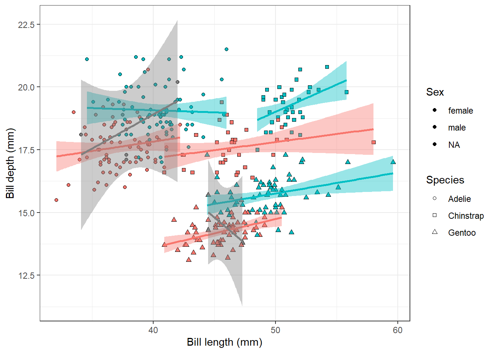

You already know how to make basic plots using ggplot functions. We’ll now dive deeper into data visualisation tools in R and again use mostly ggplot2 package and its extensions.
Every plot in ggplot consists of 7 parts that together serve as instructions on how to draw a plot:
To produce any plot, ggplot needs data, mapping and at least one layer. The other parts have some defaults, but often need adjustments for better appearance.
Data - preferably as a tidy tibble
Mapping - instructions, how the data should be displayed, usually defined using aes() to pair graphical attributes of the plot with the data, typically x and y axis with specific variables from the data, but also colours, sizes, shapes, whatever should reflect some data variable in the resulting plot
Layers - graphical representation of the data, usually defined by the geom functions, e.g. geom_point(), geom_line(), geom_bar(), geom_boxplot(), note that layers are added to the plot in the order you write them in the code, so the last geom you added will be displayed on top
Scales - scale graphical attributes to the desired values, responsible for setting the limits of the plot, breaks, labels, colour palettes etc., to modify the defaults use scale functions
Facets - split data into smaller panels based on one or more variables
Coordinates - typically Cartesian coordinates, important to set for map projections or polar plots
Theme - controls the overall appearance of the plot not controlled by the data, can be used for customization of the legend position, background colour, sizes of axis labels and many more
We will again use the penguin dataset and play with the individual plot parts.
From Chapter 3, you already know, how to visualise the relationship between the penguin bill length and bill depth.
penguins |>ggplot(aes(x = bill_length_mm, y = bill_depth_mm, fill = species, shape = species)) +geom_point() +geom_smooth(aes(colour = species), method ='lm', show.legend = F) +scale_shape_manual(values =c(21, 22, 24)) +labs(x ='Bill length (mm)', y ='Bill depth (mm)', fill ='Species', shape ='Species') +theme_bw()
But what if we now want to look at the differences between males and females? We could change the definition of the fill and colour aesthetics, so that they display sex and keep just shape for species identity:
penguins |>ggplot(aes(x = bill_length_mm, y = bill_depth_mm, fill = sex, shape = species)) +geom_point() +geom_smooth(aes(colour = sex), method ='lm', show.legend = F) +scale_shape_manual(values =c(21, 22, 24)) +labs(x ='Bill length (mm)', y ='Bill depth (mm)', fill ='Sex', shape ='Species')

But as you see, it gets a bit hard to orient in the plot. There are some NA values in the sex column, which would be better removed so that they do not add a mess to the plot. And what about splitting the plot into three smaller plots, one for each species? This is where facetting comes into play.
penguins |>filter(!is.na(sex)) |>ggplot(aes(x = bill_length_mm, y = bill_depth_mm, fill = sex, shape = species)) +geom_point() +geom_smooth(aes(colour = sex), method ='lm', show.legend = F) +scale_shape_manual(values =c(21, 22, 24)) +labs(x ='Bill length (mm)', y ='Bill depth (mm)', fill ='Sex', shape ='Species') +facet_wrap(~species)+theme_bw()
Much better, but do we really need the different shapes for different species if we have them now in different facets? It would be better to add shape differentiation to the sex variable as not everyone is able to distinguish colours. It might also help in the legend, where we now have just black dots for both levels.
penguins |>filter(!is.na(sex)) |>ggplot(aes(x = bill_length_mm, y = bill_depth_mm, fill = sex, shape = sex)) +geom_point() +geom_smooth(aes(colour = sex), method ='lm', show.legend = F) +scale_shape_manual(values =c(21, 22, 24)) +labs(x ='Bill length (mm)', y ='Bill depth (mm)', fill ='Sex', shape ='Sex') +facet_wrap(~species)+theme_bw()
We can now clearly see that for Adélie penguins, there is a positive relationship between bill length and bill depth for females, but not for males. On the other hand, for Chinstrap penguins, the relationship is stronger for males than for females.
6.2 Data argument
Till now, we have worked just with one data frame for the whole plot. You might remember that it is possible to place aesthetic mappings (aes()) either in the ggplot() call, and then it works for the whole plot, or in a geom function, which then overwrites the global mappings for that layer only. The same is possible for the data argument. We can define a different dataset for a certain layer to add, e.g., points from another dataset or highlight a subset of the data.
As an example, we will draw a scatterplot of penguin body mass vs flipper length, where we highlight penguins from the Dream island with bigger red points:
penguins |>ggplot(aes(body_mass_g, flipper_length_mm))+geom_point()+geom_point(data = penguins |>filter(island =='Dream'), colour ='red', size =3)+theme_bw()+labs(x ='Body mass (g)', y ='Flipper length (mm)')
Warning: Removed 2 rows containing missing values or values outside the scale range
(`geom_point()`).
Note that we added specifications of the point appearance of the highlighted point in the geom_point() function outside the aes(). This means the characteristics are fixed for that layer and do not change according to the data. All the points of that layer will always be red and of size 3.
facet_wrap() facets the plot according to one variable, look in the documentation, what the related function facet_grid() does and use it to make a plot of penguin bill length and bill depth faceted by species and island.
Use the gapminder dataset, from the gapminder package, which provides values for life expectancy, GDP per capita, and population size for each country of the world. Visualise the relationship between GDP per capita (on a log scale) and life expectancy in 2007. Highlight the Czech Republic and Slovakia with different colours. Place the legend in the top left corner of the plot. * Make the size of the points proportional to the country population size.
plot xx
plot yy
recreate a plot
Save all plots you created so far to the plots folder.